Microeconomí´a
David Gabriel Corzo Mcmath
2020-Jan-06 11:36:01
Í´Indice general
Capí´tulo 1
Elasticidad
-397.485
1.1. Resolució´on de corto
-
1.
- Los tres factores de producció´on:
- Tecnologí´a de producció´on.
- Restricciones de costos.
- Elecciones de los factores.
-
2.
- Q = 94 - 2ps + 0,2pt + 0,4Y
- Recordar la fó´ormula de Elasticidad de precio
| 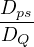 = -2 | |
|
| Ep = -2 ×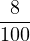 | |
|
| Ep = -0,16 | |
|
| | |
- Entonces: Es una demanda inelá´astica.
-
3.
- Q = 003Y - 2p
- Encontrar la cantidad:
| q1 = 0,03(500) - 2(5) | |
|
| q1 = 5 | |
|
| |
|
| 5 = 0,03Y - 2(7) | |
|
| 19 = 0,03Y | |
|
| ΔY = Q1 × Δp = 5 × (7 - 5) = 10 | |
|
| Calcular el nuevo ingreso | |
|
| Y 2 = Y 1 + ΔY | |
|
| Y 2 = 510 | |
|
| Calcular la cantidad dos | |
|
| q2 = 0,03(Y 2) - s(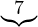p2) = -1,3 | |
|
| Efecto sustitució´on: | |
|
| Es = q(p2,y2) - q(p1,y1) | |
|
| Es = 1,3 - 5 = -3,7 | |
|
| Efecto ingreso: | |
|
| Ei = q(p2,y1) - q(p2,y2) = 1 - 1,3 = -0,3 | |
|
| | |
1.2. Teorí´a de la empresa
- Nos preguntamos: ¿Es mejor má´as productividad?
- No siempre, a veces exceden la demanda.
1.3. Las decisiones de producció´on de empresas
- Las decisiones de producció´on de una empresa:
- El punto de la teorí´a del consumidor era maximizar lo que quiere el consumidor.
Capí´tulo 2
Control de precios
-397.485
-397.485
-397.485
Capí´tulo 3
Teorí´a de la empresa y del productor
3.0.1. Los tres factores de producció´on
- Capital
- Trabajo
- Materia Prima
3.0.2. Funció´on de producció´on
- Funció´on de producció´on: Muestra el nivel de producció´on má´aximo que puede obtener la empresa con cada
combinació´on especificada de factores.
3.0.3. Tiempo
- Corto plazo: asumimos que por lo menos hay un factor que no se pueden alterar, permanece fijo.
- Largo plazo: asumimos que todos los factores son variables.
3.0.4. Producció´on en el corto plazo
- Nivel de producció´on por unidad de trabajo:
- Producto marginal:
- Marginalmente cuá´anta productividad deriva aumentar una unidad má´as de trabajo.
- Producto marginal es decreciente.
- Hay un punto donde la productividad es ó´optimo.
- La funció´on de producció´on en la ida real
- Producto medio:
- Siempre que el producto medio esté´e en aumento el producto marginal estará´a en aumento, cuando empieza
a bajar el producto medio empieza tambié´en a bajar el producto marginal.
3.0.5. ley de rendimientos marginales decrecientes
- Interesante: Puede que una empresa estéˊe produciendo máˊas y a pesar en el mismo punto empezar a tener
rendimientos marginales decrecientes.
- En el corto plazo los rendimientos productivos son variables: (K,L) ,
3.0.6. Isocuantas
- Es el equivalente a las curvas de indiferencia, estas ilustran indiferencia que tengo al combinar el capital y
trabajo y me producen en este caso el mismo output.
- La pendiente indica la disposició´on a intercambiar un factor de producció´on por otro (TMST).
- La isocuanta nos dice que disposició´on tenemos a sustituir, recordar a la tasa marginal de sustitució´on, el
equvalente en isocuanta es la TMST (Tasa Marginal de Sustitució´on Té´ecnica).
- Recordar el cá´alculo de la TMS:
- El cá´alculo de TMST:
|
TMST = -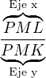 = -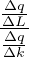 = -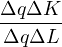 = -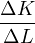
|
- Rendimiento de escala, maneras de aumentar la producció´on:
-
1.
- Aumentar en factor y mantener el otro constante ( movimiento de la curva )
-
2.
- Disminuir uno de los factores
-
3.
- Aumentar los dos factores
- Cuando se aplican las maneras de aumentar la producció´on:
- Rendimientos constantes de escala: si duplica los factores se duplica la productividad.
- Rendimientos crecientes de escala: si duplica los factores aumenta má´as del doble en la productividad.
- Rendimientos decrecientes de escala: si duplica los factores ni siquiera llega a la mitad de productividad
de má´as.
3.1. Principios
-
1.
- Las personas enfrentan disyuntivas / las personas siempre está´an tomando decisiones.
-
2.
- Las personas piensan en té´erminos marginales.
-
3.
- Las personas buscan maximizar sus beneficios.
3.2. Recordar
- Recordar lo siguiente: Los modelos no representan en su plenitud la realidad.
- Es economí´a neoclá´asica, vivimos en un mundo de escasez.
3.3. Tasa marginal de sustitució´on
-
- TMS: Puede ser expresada en té´erminos de utilidades marginales.
- Derivadas parciales: ejemplo, derivada parcial con respecto a x es :
3.4. Tasa de transformació´on
- La pendiente de la restricció´on presupuestaria.
- TMT:
3.5. Efectos por el cambio de precio
- Todas las combinaciones ó´optimos de las curvas de indiferencia forma la curva de demanda.
- Curva de precio consumo: la lí´nea que traza las combinaciones ó´optimas como respuesta a un cambio de precio,
manteniendo el ingrso constante.
- La unió´on de las combinciones ó´optimas de las curvas de indiferencia respecto de los cabios de precio.
3.6. Efectos por el cambio en el ingreso
- Curva de ingreso consumo: es la unió´on de los puntos ó´optimos respecto a los cambios en nuestros ingresos.
3.7. Curva de ingreso consumo
- Tomar en cuenta:
-
1.
- Bien normal: sube el ingreso, sube la demanda de un bien.
-
2.
- Bien inferior: sube el ingreso, dejo de demandar ese bien.
- Considerar lo siguiente: puede ser que cuando aumente el ingreso se mantenga constante con la alternativa de
ahorrar, Interesante: Ahorrar se considera como un bien normal.
- Un bien no siempre va a ser inferior o normal.
- La unió´on de los puntos ó´optimos de las curvas de indiferencia, la curva de ingreso consumo es equivalente a decir la
curva de Engel.
3.8. Fó´ormulas
- Restricció´on presupuestaria:
Capí´tulo 4
Empresa en un mercado perfectamente competitivo
4.1. Elasticidad
4.2. Efecto ingreso y sustitució´on
- Cambia en ingreso:
- Fó´ormula de restricció´on presupuestaria:
- Fó´ormula de nuevo ingreso:
- Efecto sustitució´on:
- Efecto sustitució´on es sobre la misma curva.
- Se hace una recta paralela a la nueva recta, usar esta para graficar una curva de indiferencia que intersecte
dos puntos sobre esta recta.
- Si el precio en x disminuye se pivotea a la derecha, si el precio sube se pivotea a la izquierda.
- Si el precio y disminuye
|
Es = q2(P2,Y 2) - q1(P2,Y 1)
|
- Efecto ingreso: tengo má´as poder adquisitivo para comprar.
- El efecto sustitució´on debe de ser mayor al efecto ingreso, para ser bien inferior.
- Bien es inferiores cuando los efectos sustitució´on y efecto ingreso se mueven en direcció´ones opuestas.
- Es un bien normal si se mueven en la misma direcció´on y el punto C está´a a la derecha.
|
Ey = q2(P2,Y 1) - q1(P2,Y 2)
|
- Efecto total, Slutsky:
- Graficar:
- Hacer una lí´nea paralela a q2
- hacer una curva de indiferencia que intersecte a esa paralela en dos puntos
- Evaluar si el es un bien normal, inferior o superior.
- Un bien giffen es un bien demasiado inferior.
- Para comprobar si el efecto sustitució´on:
q(P2) - q(P1) =  Slutsky Slutsky
|
4.3. Teorí´a del productor & teorí´a de consumidor
- Isocoste = Restricció´on presupuestaria
- Isocuanta = Curvas de indiferencia
4.4. Rendimientos de escala
- La variació´on debe de ser proporcional y simultá´anea.
4.5. Costos
- Minimizamos el costo cuando el costo marginal corta el costo medio total. Ó´O cuando el CM = CTMe
- Elementos del costo:
- q la funció´on de cantidad.
- CF: Costo fijo
- Ejemplo: q(x) = 10x + 5 el 5 es el costo fijo
- CT: Costo total
- Es una funció´on, la derivada es el costo marginal.
- Costo medio fijo
- Dividir la funció´on de costo total entre q:
- Costo medio variable
- Dividir el costo variable entre q
- Costo medio total
- Dividir el costo total entre q:
- Costo marginal:
- La derivada de la funció´on de costo total, derivar .
4.6. Dudas
- Lab#3 Costo de oportunidad (no está´a claro, solo memorizar el concepto):
|
Costo de oportunidad = Costo de valoració´on - Costo incurrido
|
|
|
| Costo | Valoració´on subjetiva |
|
|
| $125 | $200 |
| $50 | $100 |
|
|
| |
Capí´tulo 5
temp
5.1. Empresa vs. Mercado
5.1.1. Procedimiento
- Inciso:
| CT | = 16 + q2 | |
|
| Q | = 24 - p | |
|
| Min. CPT : | |
|
| 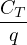 | = 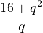 | |
|
| Costo promedio Total : CPT | = 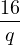 + q | |
|
| Derivamos : 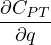 | = -16q-2 + 1 | |
|
Igualar a 0 : -16q-2 + 1 = 0  q* = 4 q* = 4 | |
|
| CPT(q* = 4) | = 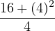 = 8 | |
|
| ∴ El precio & la cantidad es: p* | = 8,q* = 4,Q* = 16 | |
|
| | |
- Inciso:
- Dadas las siguentes funciones:
| CT | = 10q2 + 10 Q = 1,000 - p | |
|
| | |
- Sacar: q*, Q*, p* y el nú´umero de empresas.
| CTP | = 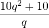 = 10q + 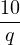 | |
|
| 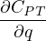 | = 10 - 10q-2  q* = 1 q* = 1 | |
|
| CTP(q* = 1) | = 10(1)1 +  = 20 = 20 | |
|
| ∴ CTP | = 20 ó´o p* = 20,q* = 1 | |
|
| | |
Capí´tulo 6
1. Cá´alculo del excedente del productor y consumidor,
2. Precios má´aximos y mí´nimos,
3. Impuestos.
Todo con integrales
6.1. Excedente del productos y del consumidor
- Asumir que estamos en equilibrio.
- Excedente del consumidor:
- Excedente del productor:
- Excedente del consumidor y productor:
- Precio má´aximo: El precio má´aximo está´a por debajo de equilibrio: PC < P* QC es la cantidad vendida al precio
má´aximo y PC es el precio má´aximo.
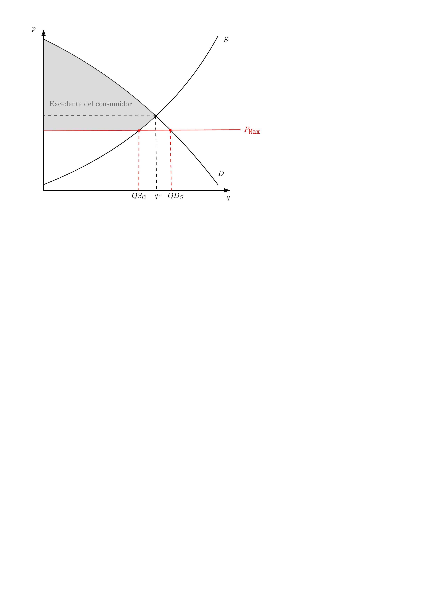
- Precio mí´nimo: El precio mí´nimo estpa porarriba del precio de equilibrio: Pf > P* y Qf es la cantidad demandada
con el precio mí´nimo. Pf es el precio mí´nimo.
- Impuestos:
6.1.1. Ejercicio
- Demanda de Widgets: D(q) = 200 - q2 Oferta: S(q) = q2 + 38, Encontrar CS y PS:
| q* = 9 | p* = 119 | |
|
| CS | = ∫
09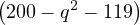dq | |
|
| = 200q -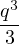 - 119q  9
0 9
0 | |
|
| = $ 486 | |
|
| | |
Capí´tulo 7
temp
7.1. Monopolio
- Neoclá´asica: monopolios pueden surgir de la manera de legislació´on y por monopolios naturales.
- Austriaca: solo hay un monopolista, los creados por el gobierno. Ejemplo Maycom.
7.2. ¿Cuá´ales son las fuentes de PODpoder de mercado?
- Patentes
- Licencias de exclusividad
- Economí´as de escala
- Derecho exclusivo a un input
- Innovaciones tecnoló´ogicas
7.3. ¿En qué´e punto un monopolista maximiza sus ganancias?
- Nivel de output en el que Ingreso marginal = costo marginal
- Empresa competitiva: ingreso marginal = precio, esto no aplica para el monopolista.
- Un monopolista no posee una pequeñ˜na parte del mercado. Ya que vende un bien o servicio ú´unico, enfrenta la curva de
demanda en su plenitud.
- Para el monopolio el ingreso marginal es menor al precio: IM < P
- Dado a que es un bien ú´unico esto permite poder poner el precio mucho má´as caro que el costo.
7.4. Eligiendo precio o cantidad...
A diferencia de una empresa competitiva, un monopolio puede ajustar precio o cantidad para maximizar ganancias, pero
está´a limitado por la demanda del mercado (no puede elegir un precio y cantidad por encima de la curva de demanda).
7.5. ¿Có´omo calcular el ingreso marginal?
- Maximizamos ganancias cuando precio marginal es igual al ingreso marginal.
7.6. Markup
Definicióˊon de “Markup”: Quéˊe tanto puede poner el monopolista el precio por encima del costo marginal
7.7. Learner
El tamañ˜no del markup:
7.8. Ejercicio
| P | = 100 - 2Q | |
|
| CF | = 100 | |
|
| CM | = 20 | |
|
| | |
Encontrar Q*, P*, Ingresos totales y ganancias (π) Graficar.
| Encontrar el marrginal Revenue: | |
|
| IM | = 100 -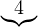×2Q | |
|
| igualamos IM = CM para encontrar Q*. | |
|
| 100 - 4Q | = 20 | |
|
| Q* | =  20 20 | |
|
| Encontrar P* | |
|
| P* | = 100 - 2 60 | |
|
| Encontrar los ingresos totales y costos totales: | |
|
| IT | = P × Q = 20 × 60 = 1200 | |
|
| CT | = CF + CV = CF + CM × Q = 100 + 20 = 500 | |
|
| Hallar las ganancias (profits) | |
|
| π | = IT - CT = 1200 - 500 = 700 | |
|
| | |